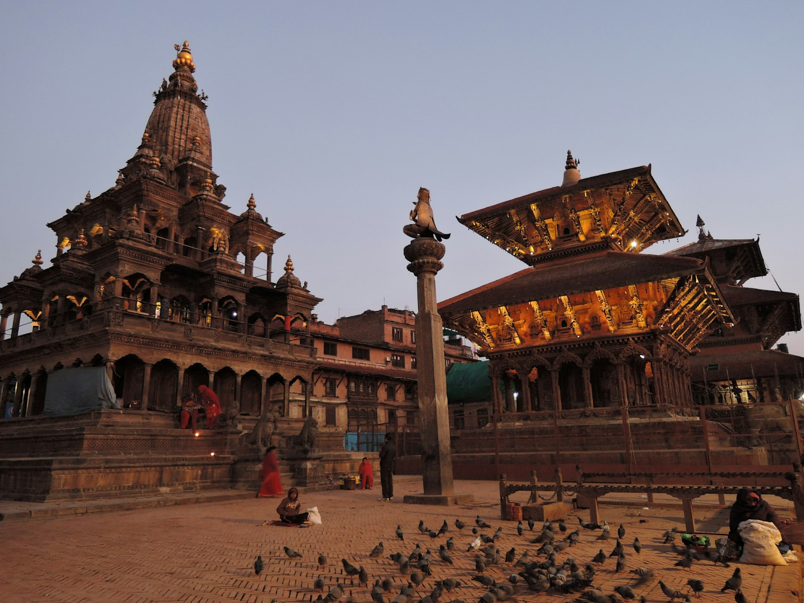
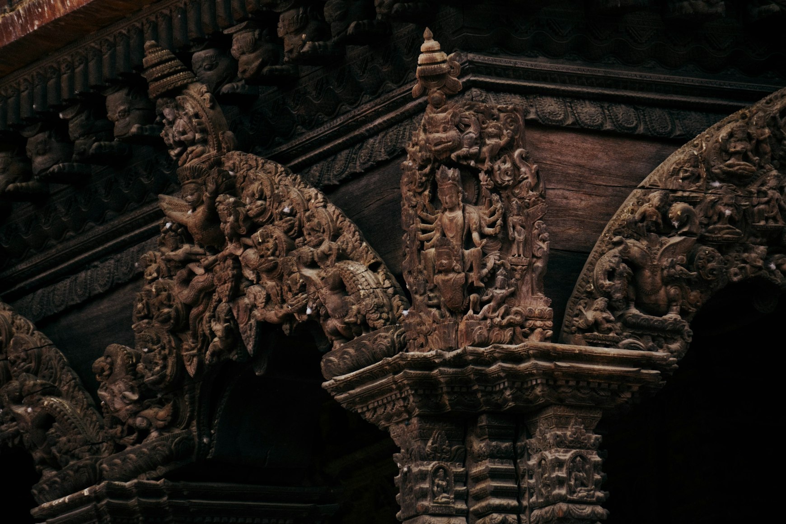
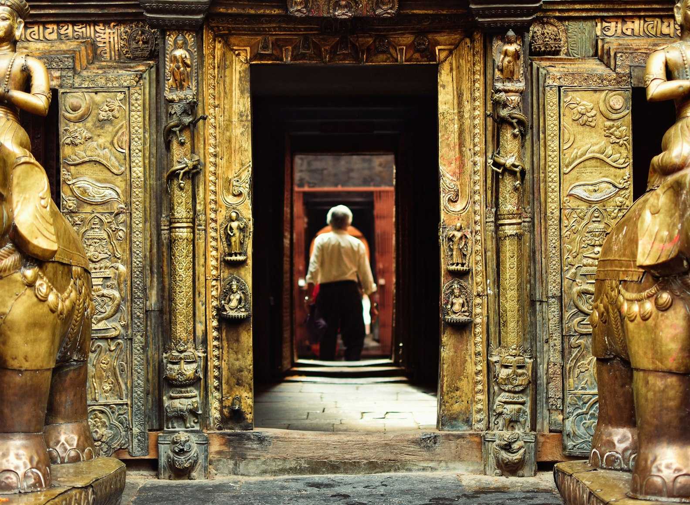
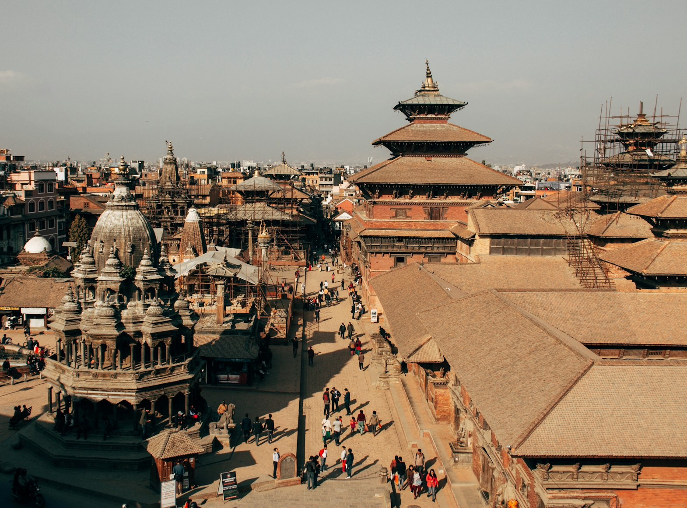

There are cities that impress you immediately. They overwhelm with scale, noise, skyscrapers, movement, crowds, enormous squares, and endless lists of places you are supposed to “see.” And then there is Patan — a city that works in an entirely different way.
It does not try to impress you.
It does not attempt to appear grand.
It does not force you into rushing from one attraction to another.
Instead, it slowly changes your rhythm.
At first you simply notice the light on old brick. Then a golden temple roof appearing behind electrical wires and carved balconies. Then a small courtyard unexpectedly opening behind an unremarkable doorway. Then the sound of a bell somewhere deep inside a monastery.
And eventually you realize you have been walking for hours without a map, without a destination, and without any desire to hurry anywhere.
Why Patan Becomes the Defining Memory of Nepal
Many people come to Nepal for the Himalayas. Yet surprisingly often, it is Patan that remains the strongest memory of the entire journey.
Because this is where Nepal becomes not only beautiful, but deep.
Kathmandu can overwhelm you. Pokhara can relax you. Bhaktapur can impress with its medieval atmosphere. But Patan creates something more intimate: the feeling of a city where you could easily imagine staying for weeks.
It does not feel like an open-air museum.
It feels like a place where beauty is still woven into everyday life.
Patan Durbar Square — The Square Worth Waking Up Early For

Almost every introduction to the city begins at Patan Durbar Square. And this is one of those places where it is worth abandoning the normal tourist rhythm and arriving very early in the morning.
At sunrise the square feels almost unreal.
The shops are still closed. Pigeons move slowly across the brick pavement. Someone sweeps the steps of a temple. Light gradually touches the golden roofs.
At this hour Patan Durbar Square no longer feels like a tourist attraction.
It feels like a stage set for an ancient city that is only beginning to wake up.
Patan Museum — Nepal’s Most Atmospheric Museum

Patan Museum unexpectedly changes the way the entire city feels.
The museum occupies part of the old royal palace, but the most memorable thing is not even the collection itself.
It is the atmosphere of the space: quiet courtyards, warm brick walls, wooden galleries, soft light, and bronze sculptures creating a feeling of remarkable calm.
After visiting the museum, Patan begins to read differently.
You stop seeing only beautiful temples and begin understanding the symbols, gestures, rituals, and visual language woven into the city itself.
Hidden Courtyards — The Real Treasure of Patan
The real Patan begins not on the famous squares, but inside the hidden courtyards known locally as baha and bahal.
These spaces create the feeling of a city hidden inside another city.
You walk through a narrow brick lane, pass a tiny shop, hear a motorbike somewhere nearby — and suddenly find yourself in a silent courtyard filled with prayer wheels, bronze stupas, and dark wooden windows polished by time.
The most beautiful places in Patan are rarely directly in front of you.
This city requires attention.
Golden Temple — Where Patan Becomes Almost Mystical

Golden Temple, officially known as Hiranya Varna Mahavihar, is one of the most powerful places in the city.
Not because of its scale.
But because of its intimacy.
The entrance is so discreet that it is easy to walk past it. Yet behind it opens a golden Buddhist courtyard filled with shadow, metallic light, prayer wheels, oil lamps, and the feeling of a space whose rhythm has barely changed for centuries.
The best time to visit is early morning or rainy weather, when the courtyard becomes especially quiet and atmospheric.
Mahabouddha Temple — The Terracotta Temple of a Thousand Buddhas

If Golden Temple feels golden and shadowed, Mahabouddha Temple feels almost graphic.
Its façade is covered with hundreds of small Buddha images built into the terracotta surface.
From a distance the temple resembles texture more than architecture.
What makes Mahabouddha extraordinary is how naturally it exists inside ordinary streets, local shops, and residential neighborhoods.
Patan constantly works through contrasts between everyday life and beauty.
Rooftop Cafés — Seeing Patan from Above

At street level Patan feels dense and labyrinthine. But the moment you climb onto a rooftop terrace, the city reveals itself differently.
From above you see temple roofs, prayer flags, distant hills, old brick courtyards, carved windows, and haze drifting across Kathmandu Valley.
Rooftop cafés are what make Patan perfect for slow travel.
In the morning people drink tea overlooking stupas. In the evening they watch the city slowly turn gold.
Some of Patan’s finest moments happen not inside museums or temples, but on rooftops while the city gradually darkens after sunset.
Why It’s Impossible to Rush Through Patan
Because this city constantly asks you to stop.
Another courtyard.
Another rooftop.
Another temple.
Another perfect patch of light on old brick.
In Patan it becomes almost impossible to move in a straight line.
The city keeps interrupting you with beauty, atmosphere, details, and the quiet feeling that something interesting is always waiting around the next corner.
That is why people stay longer than they planned.
Patan does not try to impress anyone.
It simply continues living among its own beauty.
When to Visit Patan
The best seasons are usually October to November and December to February.
Autumn brings clear skies, soft light, and comfortable temperatures perfect for walking. Winter creates colder mornings but also the most cinematic light of the year.
Monsoon season can also feel surprisingly beautiful for travelers who enjoy atmospheric cities: wet brick, quiet courtyards, grey skies, reflections on stone, and rain drifting through old alleys.
But more important than the season is the hour itself.
The best time in Patan is always early morning and the final hour before sunset.
Final Thought
Patan stays with people differently.
Not as a checklist of temples and museums, but as a slower state of mind the city gradually pulls you into.
You remember the morning light moving across carved wooden windows. Wet brick after rain. Tea on rooftop terraces. Temple bells somewhere behind hidden courtyards.
The real power of Patan is that the city never separates beauty from life.
People live inside it. Work inside it. Pray inside it. Sit on temple steps in the evening while the brick slowly darkens around them.
Patan does not try to become the defining memory of Nepal.
It simply does.